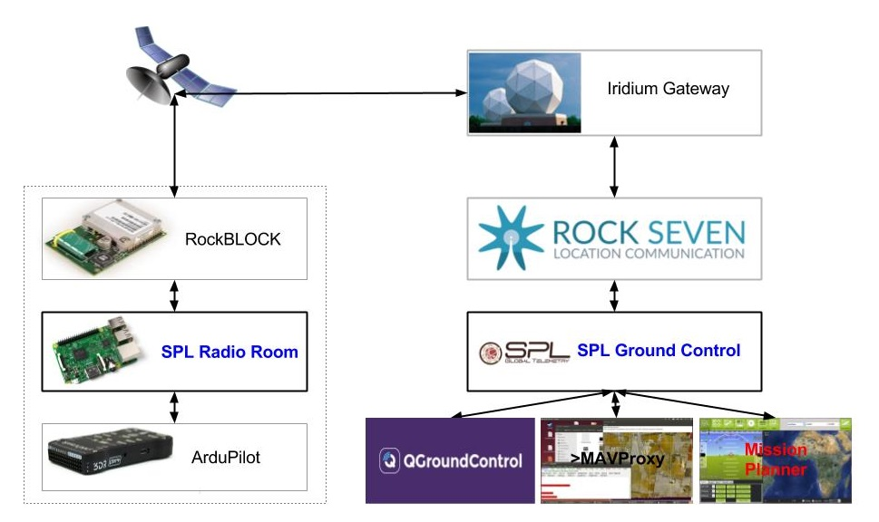

SPL is a global satellite telemetry solution for unmanned vehicles controlled by ArduPilot.
With SPL you can:
SPL can also be used together with radio telemetry as a long range backup channel to track and control vehicles if they leave radio channel range.
Essentially, with SPL you could control your unmanned vehicle on the other side of the Earth almost the same way you would with radio telemetry. SPL was designed to work with popular ground control stations such as Mission Planner, QGrouindControl, and MAVProxy.
Not only does SPL transmit messages between autopilot and ground control stations, it also filters messages and aggregates data to adapt MAVLink protocol for high latency asynchronous SBD communication.
SPL uses Iridium short burst data (SBD) satellite communication technology provided by Rock Seven Mobile. Iridium SBD is a high latency, low bandwidth messaging technology, yet it is relatively inexpensive compared to other global communication solutions. The required hardware is very compact and lightweight.
The SPL software suite autopilot companion computer firmware called SPL Radio Room for ArduPilot companion computer and a web service application called SPL Ground Control, which serves as a proxy between ground control stations such as Mission Planer or QGroundControl and Rock7Core web services. SPL RadioRoom and SPL Ground Control are open source software.
SPL RadioRoom requires the following hardware components:
SPL RadioRoom could also work with RockBLOCK+ and RockFLEET modules if additional RS-232 Arduino shield are used.
SPL Ground Control requires a computer accessible over the Internet. Running SPL Ground Control on Amazon AWS is probably the easiest way to get started with SPL.
Optional SPL Stream and SPL Tracks web services could be used to store and visualize the vehicle tracks.
Envirover is also working on solutions for saving, mapping, and processing the reported data as well as researching high-bandwidth satellite communication technologies.